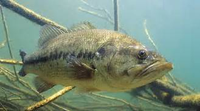

This year I joined the UGA Bass Anglers club and I have had a blast doing it. The UGA Bass Anglers club is a club sport centered around the bass fishing community. We travel around the country fishing different lakes in tournanments against other college anglers. There are three collegiate tournament trails that we follow; BASSMASTERS College series, FLW college series, and Cabela's Collegiate Angler series. Each of these trails has their own format and own regional tournaments and they all each have their own national championship. Schools from all around the country come and compete against each other for cash money, boats and gear, scholarship money, and other prizes. As you can imagine this is very expensive sport with gear, gas, and hotel costs. Thats why most colleges give allocated funds to their team in order to pay for some of the expenses. Some clubs resort to fundraising in order to fund the club because students in college can't afford these costs. Depending on how far away the tournament is, the trip can cost any where from $200 to $700, but with that being said there is alot of money to be won at these tournaments as well. Depending on the tournament a winning team can win thousands of dollars. In fact, 2 UGA anglers Nathan Ragsdale and Wesley Griner came in 2nd place at the FLW regional on Lake Guntersville in Alabama. They brought home over $1,200. This is a great amount of money and helps keep the club funded a little longer. Recently, at the FLW open tournament on Kentucky lake the 1st place winner took home and brand new bass boat. These are high valued prizes and students put alot of time, money, and effort into trying to obtain these.
Speaking of time, the time these students take out of their school schedule to fish these tournaments is overwhelming. These students miss alot of school and still have to maintain a quality GPA to get HOPE and to be eligible to graduate. However, this time is not wasted just for fun. College bass fishing is an extremely marketed sport. Companies big and small pour money into these tournaments and sponsorships. Alot of these college anglers get sponsored in some cases and it opens doors and opportunites for students in the outdoor industry, business world, and marketing careers. It puts students in an industry tha is well funded and provides career opportunities. These tournaments are sometimes televised on the outdoor channel, world fishing network, and rarely ESPN. Because of this and thanks to live streams on social media platforms, students are able to showcase their fish all while practicing their marketing and advertising skills in front of the camera. Other than TV, I just mentioned social media. Particularyly Instagram and Facebook have provided essential outlets for college anglers to promote their sponsors, their team and the sport itself. They have made it very easy to showcase the anglers' talents. One more fantastic outlet and another vital part of bass fishing as a sport is YouTube. YouTube is a perfect place to showcase bass fishing and go into greater depth and detail than just a picture on instagram. With bass fishing competing for TV time with baseball, basketball, and football and other major sports, it doesn't always get the time that it needs. Thats where YouTube comes in, it gives an outlet for anglers of all backgrounds and all experience levels to promote products and more importantly teach people all over the world how to fish for bass. This gets alot of young anglers interested in the sport and keeps the sport of bass fishing growing. For example check out this guys channel!
Flukemaster FishingFor me, my experince has extremely fun, informational, and educational. I have 3 collegiate tournaments so far. All of mine have been from the FLW tour and I plan to fish atleast two from the BASSMASTERS Tour. I have travlled to South Carolina, Alabama, and Kentucky this semester fishing these tournaments and I have had a blast every minute. I have made many new friends and met many new people through this sport and I believe that it is truly a sport for every person, young or old, beginner or expert, anybody can learn to fish and fish well with enough time and practice. This sport can bring you friends and connections that will last a life time and from these friends, teammates, and my experiences; I have learned so much about bass fishing and myself and I have been to places I never thought I'd go. I think with summer time right around the corner you should try out fishing. It is a fun sport and can put a smile on anybdoy's face when they set the hook into a fish for the first time, and you never know it might become your new favorite hobby.
